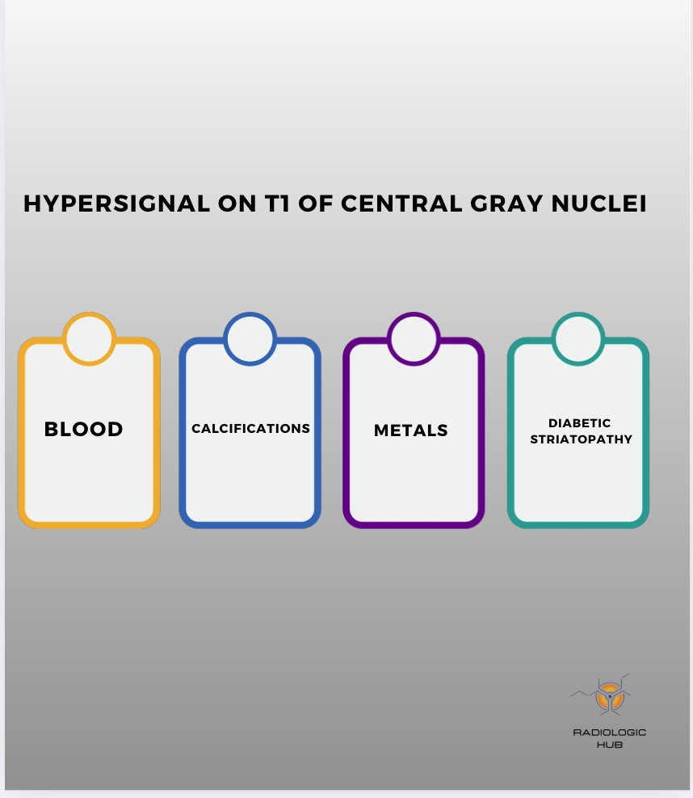
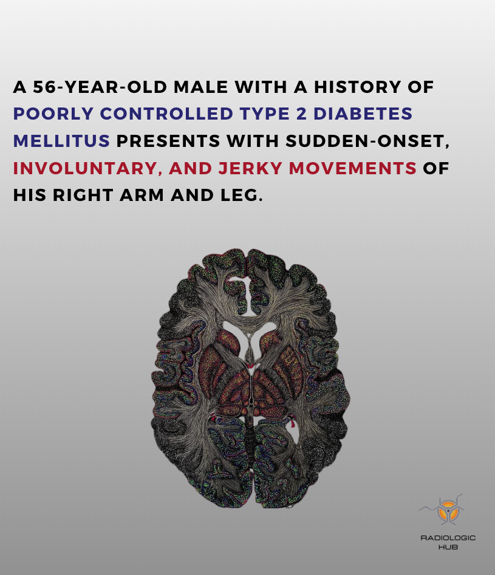
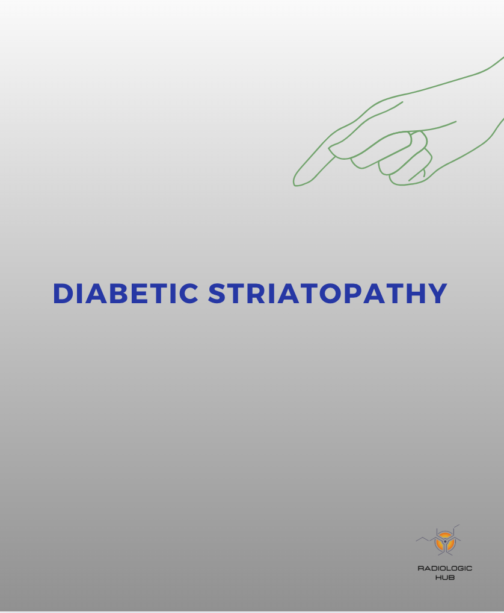
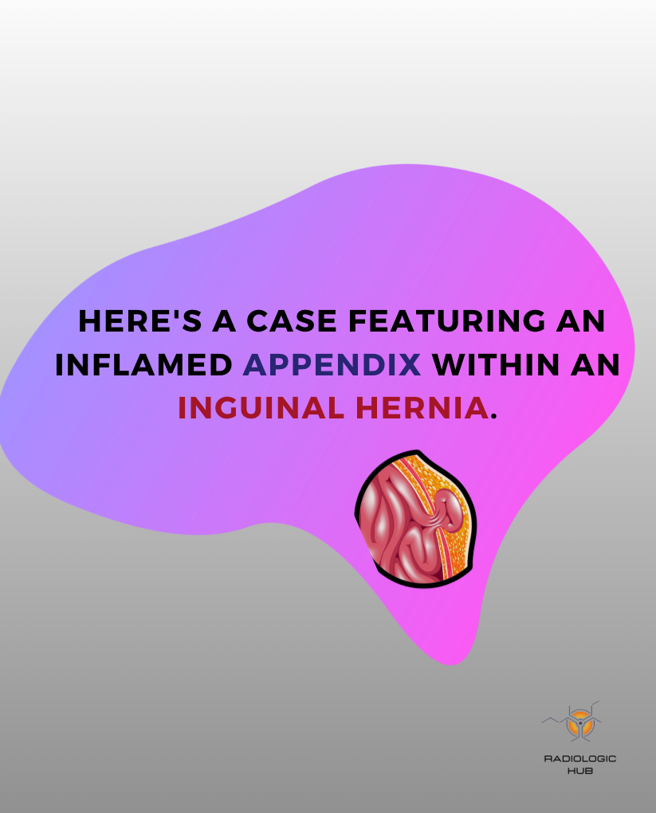

Cas réels en DICOM
Séries complètes, fenêtrage, reconstructions : comme sur votre console.
Radiologues · Résidents
Comptes rendus, fiches pratiques, radioanatomie et ressources pour interpréter, rédiger et approfondir vos connaissances.
Modèles par examen, phrases automatiques, dictée vocale et calculateurs (PI-RADS, BI-RADS, Fleischner…).
Ouvrir l'éditeur →L'essentiel de l'imagerie d'urgence, spécialité par spécialité : techniques, signes clés et pièges.
Voir les fiches →Des examens à parcourir coupe par coupe, comme sur une console, structures colorées et nommées.
Explorer →Des articles en accès libre classés par thème, avec un résumé en français.
Lire →Un aperçu de nos masterclass : lisez la vignette, choisissez, apprenez.
Cas complet : le menton qui s'endort → Tous les cas cliniques →
Fiche flash · Neuro
Retournez les cartes pour réviser les 4 grandes causes.
Le style RadiologicHub : des visuels clairs, des mots-clés, l'essentiel à retenir.




Masterclass · Urgences
Des masterclass par spécialité — neuro, digestif, thorax, traumato, vasculaire, pédiatrie — pour lire vite et juste pendant vos gardes.
Une spécialité, une journée, les urgences qu'il ne faut jamais manquer.
Pensé pour la réalité des gardes : on lit, on raisonne, on rédige.
Séries complètes, fenêtrage, reconstructions : comme sur votre console.
Entraînement en conditions de garde, puis correction commentée.
Modèles de CR et checklist de lecture prêts à l'emploi.
Avant / après chaque module pour mesurer vos progrès.
Sessions live interactives en effectif réduit.
Toutes les sessions à revoir avant une garde.
Exemple : Masterclass Neuro-urgences. Chaque spécialité suit la même structure.
10 cas flash pour faire le point sur vos réflexes.
ASPECTS, angioscanner, perfusion, occlusions proximales.
HSA, hématomes, signes de gravité, étiologies à ne pas manquer.
Lésions axiales, fractures, critères d'instabilité.
Cas chronométrés sur console, correction collective.
Rédaction structurée et évaluation finale.
Tarifs indicatifs. Réduction pour les internes et étudiants sur justificatif.
190€
Une masterclass au choix
Le plus choisi
490€
Trois masterclass au choix
890€
Toutes les spécialités
Aux internes et jeunes radiologues, aux radiologues qui prennent des gardes, et aux urgentistes qui veulent renforcer leur lecture de l'imagerie.
En live en ligne, avec replay. Des sessions en présentiel peuvent être organisées ponctuellement.
Non : les cas s'ouvrent directement dans le navigateur grâce à une visionneuse DICOM intégrée.
Oui, une attestation de participation est délivrée après chaque masterclass.
Bien sûr. Chaque masterclass est indépendante ; les packs offrent un tarif dégressif.